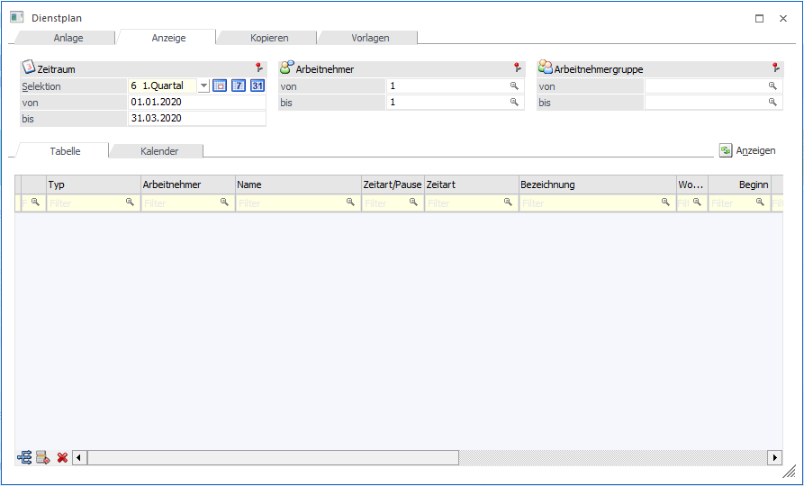
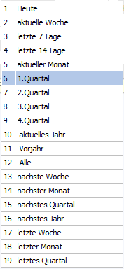
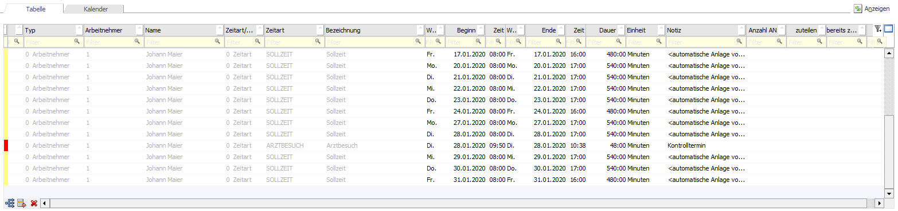
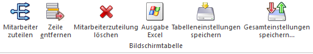
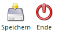
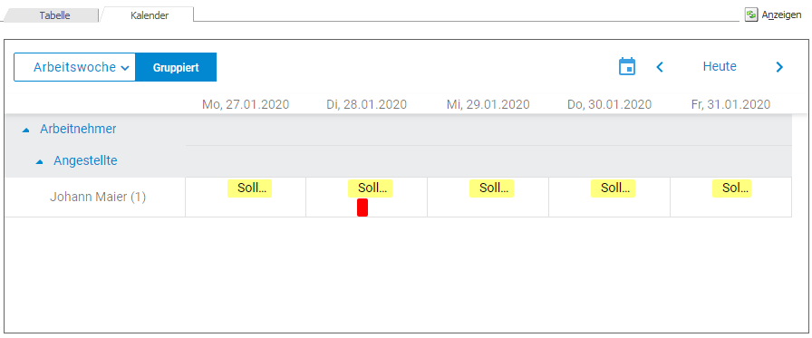
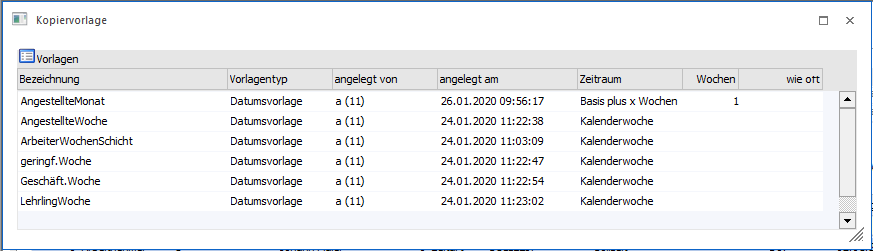
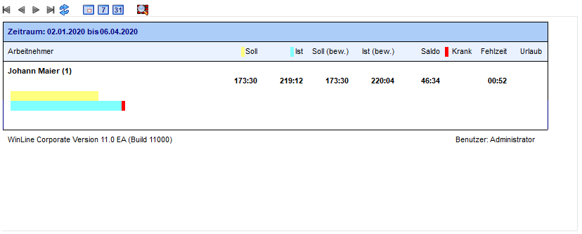

Ins Register "Anzeige" gelangt man entweder automatisch, sobald aus dem Register "Anlage" Sollzeiten angelegt werden oder das Register wird manuell aufgerufen. In diesem Register können je nach Selektion bzw. Auswahl die Sollzeiten und Fehlzeiten nach verschieden Kriterien angezeigt werden.

Zeitraum
Ø Selektion
Ø von - bis
Über eine Auswahllistbox kann der Zeitraum selektiert werden, dabei stehen folgende Zeitraumselektionen zur Verfügung:

Zusätzlich stehen noch 3 weitere Buttons, mit denen man den Zeitraum schnell ändern kann.
ü Heute
ü aktuelle Woche
ü aktueller Monat
Nach der Auswahl eines Zeitraums werden die Felder "von" und "bis" automatisch neu berechnet und können manuell noch editiert werden.
Ø Arbeitnehmer
Ø von - bis
Über den Matchcode oder der Autovervollständigung kann auf die Arbeitnehmer bzw. Mitarbeiter eingrenzt werden.
Ø Arbeitnehmergruppe
Über den Matchcode oder der Autovervollständigung kann auf die Arbeitnehmergruppe eingrenzt werden.
Tabellenbutton
Ø Anzeigen
Beim Drücken des Anzeigen-Buttons werden alle Sollzeiten des angegebenen Zeitraums angezeigt.
Das Register "Anzeige" ist wiederrum in 2 weitere Unterregistern unterteilt.
ü Tabelle
Anzeige in einer
Bildschirmtabelle
ü Kalender
Anzeige einer
Kalenderansicht
Hinweis
Die in der Zeitart oder der Pause hinterlegte Farbe wird in der Tabellenansicht in einer schmalen Spalte an erster Stelle und in der Kalenderansicht im Balken dargestellt.
Tabellenansicht

Ø Typ
Über eine Auswahllistbox kann entweder ein Arbeitnehmer bzw. Mitarbeiter oder eine Arbeitnehmergruppe ausgewählt werden.
Ø Arbeitnehmer/Arbeitnehmergruppe
Auswahl des Arbeitnehmers bzw. Mitarbeiters oder der Arbeitnehmergruppe. Dazu steht der Matchcode oder die Autovervollständigung zur Verfügung.
Ø Name
Anzeige des Namens des Arbeitnehmers bzw. Mitarbeiters oder der Arbeitnehmergruppe. Diese Spalte ist nicht editierbar.
Ø Zeitart/Pause
Auswahl bzw. Anzeige um welche Zeitart es sich handelt, dabei stehen in der Auswahllistbox "0 Zeitart" und "1 Pause" zur Verfügung.
Ø Zeitart
Je nachdem, ob eine Zeitart oder eine Pause ausgewählt worden ist, kann in diesem Feld entweder Zeitarten aus dem Zeitartenstamm oder Pausen aus dem Pausenstamm ausgewählt werden. Dabei steht der Matchcode zur Verfügung.
Ø Bezeichnung
Die Bezeichnung wird aus der jeweiligen Zeitart bzw. Pause herangezogen. Das Feld ist nicht editierbar.
Ø Wochentag von
Anhand des Beginn-Datums wird der Wochentag automatisch eingetragen. Das Feld ist nicht editierbar.
Ø Beginn
Eingabe des Beginn-Datums für die Zeitart.
Ø Zeit
Eingabe der Beginn-Uhrzeit für die Zeitart.
Ø Wochentag bis
Anhand des End-Datums wird der Wochentag automatisch eingetragen. Das Feld ist nicht editierbar.
Ø Ende
Eingabe des End-Datums der Zeitart.
Ø Zeit
Eingabe der End-Uhrzeit für die Zeitart.
Ø Dauer
Die Dauer wird anhand der Beginn- und End-Uhrzeit automatisch gerechnet. Das Feld ist nicht editierbar.
Ø Einheit
Anzeige der Einheit aus der Zeitart.
Ø Notiz
Erfassung einer Notiz pro Zeileneingabe.
Ø Anzahl AN
Anzeige der Anzahl der Arbeitnehmer bzw. Mitarbeiter, die bei der ausgewählten Arbeitnehmergruppe hinterlegt sind. Dieses Feld ist nur dann befüllt, wenn es sich um eine Arbeitnehmergruppenzeile handelt.
Ø zuteilen
Eingabe der Anzahl wie viele Arbeitnehmer bzw. Mitarbeiter zugeteilt werden sollen.
Ø bereits zugeteilt
Anzeige der Anzahl wie viele Mitarbeiter bereits zugeteilt sind.
Hinweis
Wenn nicht alle benötigten Arbeitnehmer bzw. Mitarbeiter eingefügt werden können, wird ein blaues Info-Icon angezeigt. Mit Doppelklick wird eine Liste geöffnet, in der anzeigt wird, welche Arbeitnehmer bzw. Mitarbeiter nicht verfügbar sind.
Tabellenbuttons

Ø Mitarbeiter zuteilen
Mittels den "Mitarbeiter zuteilen"- Button kann eine automatische Zuteilung auf die Mitarbeiter erfolgen, wenn Arbeitnehmergruppen vorhanden sind, für die es noch keine Arbeitnehmer- bzw. Mitarbeiterzeilen gibt. Dabei werden alle Arbeitnehmer bzw. Mitarbeiter der betroffenen Arbeitnehmergruppe geprüft, ob es an den angegebenen Tagen bereits Soll- oder Fehlzeiten gibt. Wenn das nicht der Fall ist, wird die entsprechende Arbeitnehmer bzw. Mitarbeiterzeile eingefügt.
Hinweis
Wenn eine Arbeitnehmergruppe nicht vollständig aufgeteilt ist, wird der Gruppenname in rot dargestellt.
Achtung
Wenn Arbeitnehmergruppenzeilen aufgeteilt sind, können die Arbeitnehmergruppe und die Datümer nicht mehr geändert werden.
Ø Zeile entfernen
Mit diesem Button kann die markierte Zeile entfernt werden.
Ø Mitarbeiterzuteilung löschen
Nach einer Abfrage können die zugeteilten Mitarbeiter wieder entfernt werden, solange die Zuteilung nicht gespeichert worden ist.
Ø Ausgabe Excel
Der Inhalt der Tabellenansicht kann in eine Excel-Tabelle ausgegeben werden.
Ø Tabelleneinstellungen speichern
Die Spalten einer Tabelle können grundsätzlich an beliebige Positionen verschoben, bzw. in der Breite entsprechend angepasst werden. Durch Anwahl des Buttons "Tabelleneinstellungen speichern" werden die Einstellungen benutzerspezifisch gespeichert und bei dem nächsten Aufruf des Programmpunktes wieder vorgeschlagen.
Ø Gesamteinstellungen speichern
Im Gegensatz zu "Tabelleneinstellungen speichern" können mit "Gesamteinstellungen speichern" mehrere Tabellenaufbauten gespeichert und nach Wunsch geladen werden. Zusätzlich werden Sonderfunktionen der Tabelle (z.B. "Spalte gruppieren") ebenfalls bei der Speicherung bedacht.
Kalenderansicht
Im Kalender können Einträge entweder durch Verschieben oder durch Aufruf von "Bearbeiten"
im Kontextmenü geändert werden. Sobald ein Eintrag bearbeitet wird, wird der Eintrag in der Tabellenansicht geladen und kann dort editiert werden.
Kalenderansicht-Buttons

Ø Speichern
Mit dem Speichern-Button werden die Änderungen übernommen und es wird wieder automatisch in die Kalenderansicht gewechselt.
Ø Ende
Bei dem Ende - Button wird wieder in die Kalenderansicht gewechselt ohne eine Änderung gespeichert zu haben.

Buttons
Ø OK
Mit dem OK-Button werden die Änderungen gespeichert.
Ø Ende
Mit dem Ende - Button wird wieder die Tabellen- bzw. Kalenderansicht wiederhergestellt.
Ø Sollzeit
Beim Drücken des Sollzeit-Buttons werden die Sollzeiten für den ausgewählten Zeitraum angezeigt. Der Button wird benutzerspezifisch gespeichert.
Ø Fehlzeit
Beim Drücken des Fehlzeiten-Buttons werden die Fehlzeiten angezeigt. Der Button wird benutzerspezifisch gespeichert.
Ø Vorlage speichern
Beim Druck auf diesen Button wird ein eigens Fenster geöffnet, in dem bereits alle gespeicherten Vorlagen angezeigt werden. Es kann nun eine neue Vorlage angelegt oder eine bestehende überschrieben werden. Damit können Sollzeiten als wiederkehrender Dienstplan verwendet werden.

ü Bezeichnung
Eingabe eines
Namens für die Vorlage
ü Vorlagentyp
Aus des
Vorlagentyps über eine Auswahllistbox "0 Datumvorlage", "1 Wochenvorlage" oder
"2 Tagesvorlage".
ü angelegt von
Dieses Feld wird
automatisch befüllt und ist nicht editierbar.
ü angelegt am
Dieses Feld wird
automatisch befüllt und ist nicht editierbar.
ü Zeitraum
Auswahl des Zeitraumes
wie kopiert werden soll. Über eine Auswahllistbox können "1 morgen", "2 Basis
plus x Wochen", "3 Kalenderwoche" und "4 Datumseingabe".
ü Wochen
Anzahl der Wochen auf
welche kopiert werden soll. Steht nur bei dem Zeitraum "2 Basis plux x Wochen"
zur Verfügung.
ü wie oft
Anzahl wie oft der
Zeitraum kopiert werden soll.
Ø Vorlage löschen
Vorlage kann gelöscht werden, steht nur im Register "Vorlage" zur Verfügung.
Ø OIF anzeigen
Wenn der Button aktiviert ist, wird für alle in der Tabellenansicht vorhanden Arbeitnehmer bzw. Mitarbeiter eine Gesamtsumme für Ist, Soll, Fehlzeit und Urlaub angezeigt. Das OIF wird beim Entfernen von Zeilen, beim Kopieren auf einen anderen Zeitraum, beim Editieren und beim Verschieben von Zeilen bzw. Einträgen im Kalender aktualisiert. Der Button wird benutzerspezifisch gespeichert.
